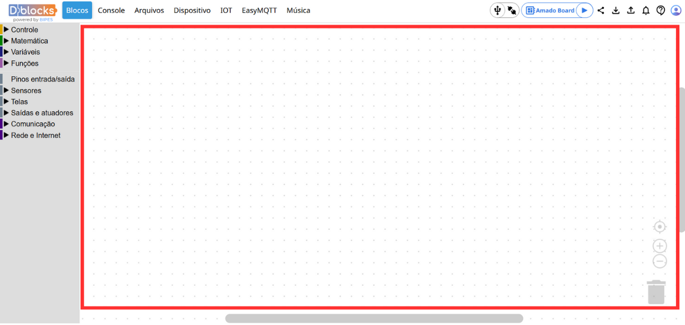
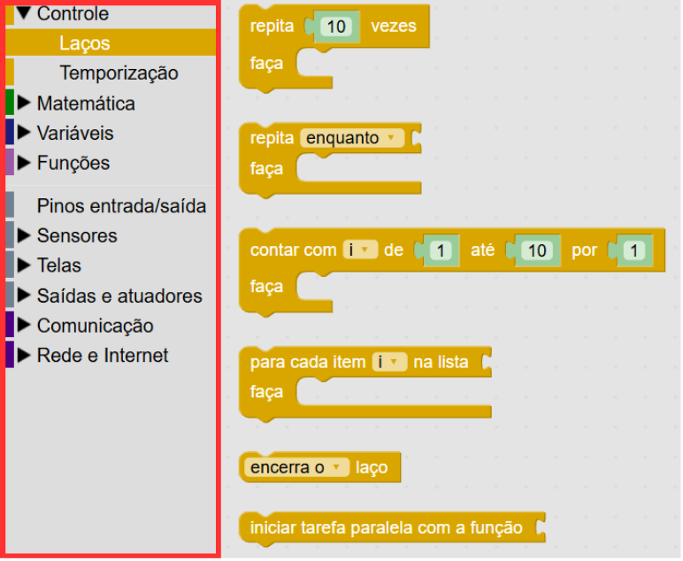
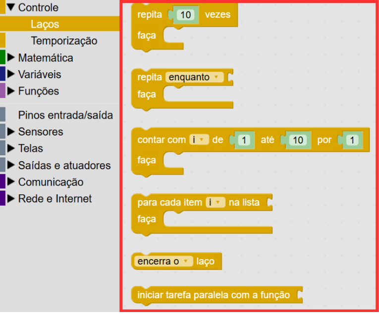
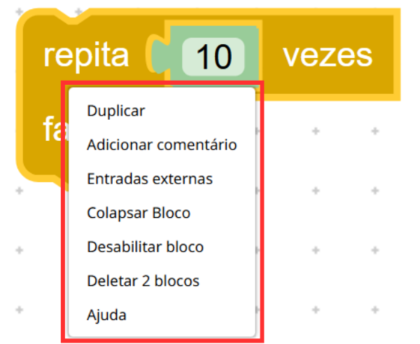
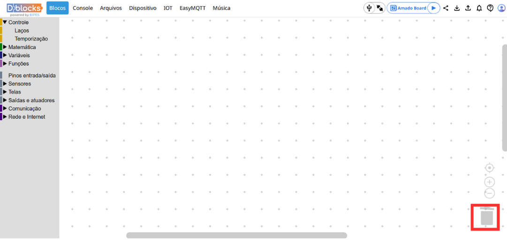
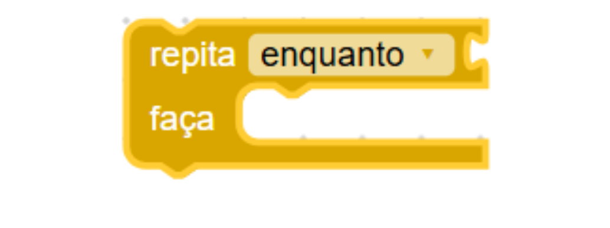
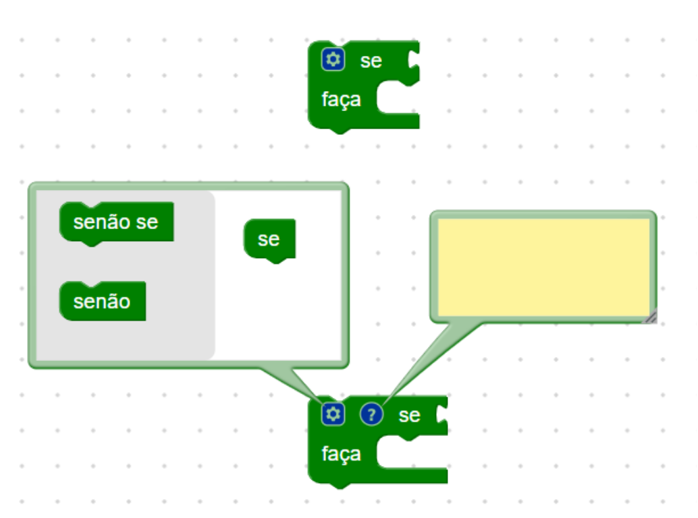

Neste capítulo, vamos explorar e conhecer um pouco mais sobre a plataforma antes de colocar a mão na massa. Para facilitar o entendimento, vamos definir alguns termos que usaremos ao longo deste guia e que podem aparecer com frequência.
O espaço de trabalho é o componente de nível mais alto. É aqui que você faz o trabalho de programação usando os blocos disponíveis, tendo opção de colocar, arrastar, excluir e estruturar conforme a sua necessidade.

A caixa de ferramentas contém os blocos usados para programar. Os blocos podem ser arrastados para o espaço de trabalho. Há dois tipos principais de caixas de ferramentas: suspensas e de categoria.
A caixa de ferramentas de categoria tem vários conjuntos de blocos. Se você clicar em um item de categoria, ele abrirá um menu suspenso que exibe os blocos dessa categoria.

A caixa de ferramentas de menu suspenso contém um conjunto de blocos que estão disponíveis para uso. É nela que você escolhe os blocos que serão usados no workspace.

O menu de contexto aparece quando você clica com o botão direito do mouse. Ele exibe uma lista de ações que você pode realizar nesse elemento, como duplicar um bloco, adicionar comentários e outras ações.

Na lixeira, você pode arrastar e soltar blocos para excluí-los. Também é possível clicar na lixeira para abrir um menu suspenso com os blocos excluídos para que você possa recuperá-los.

Um campo é um elemento visual que reside em um bloco. Ele pode ser editável (como uma entrada de texto) ou apenas informativo (como um rótulo).

Um ícone é um elemento visual que reside em um bloco. Eles sempre estão no canto superior do bloco e geralmente criam bolhas.

A barra de ações é uma parte fundamental para interagir com a Amadoboard. É aqui onde você pode conectar a placa, executar programas, baixar o seu código para usar em qualquer outro momento e carregá-lo de volta quando quiser, além de outras funcionalidades.
Neste capítulo, aprendemos sobre diversas nomenclaturas e áreas da plataforma Dblocks. O próximo passo é conhecer um pouco mais sobre a placa Amadoboard, que será fundamental em nossa jornada de aprendizado.